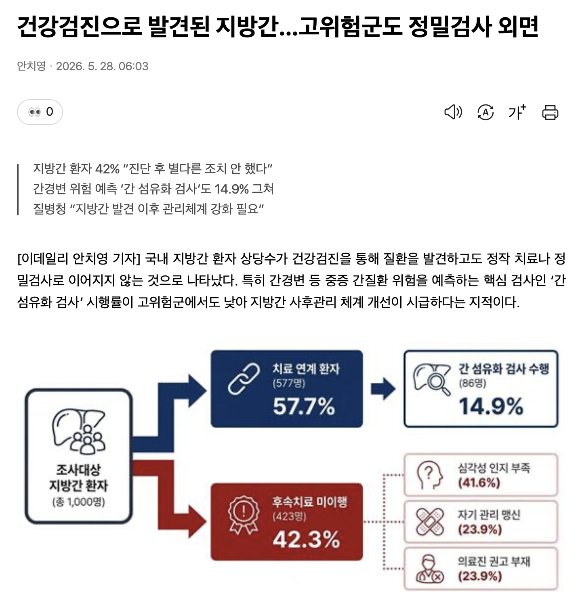
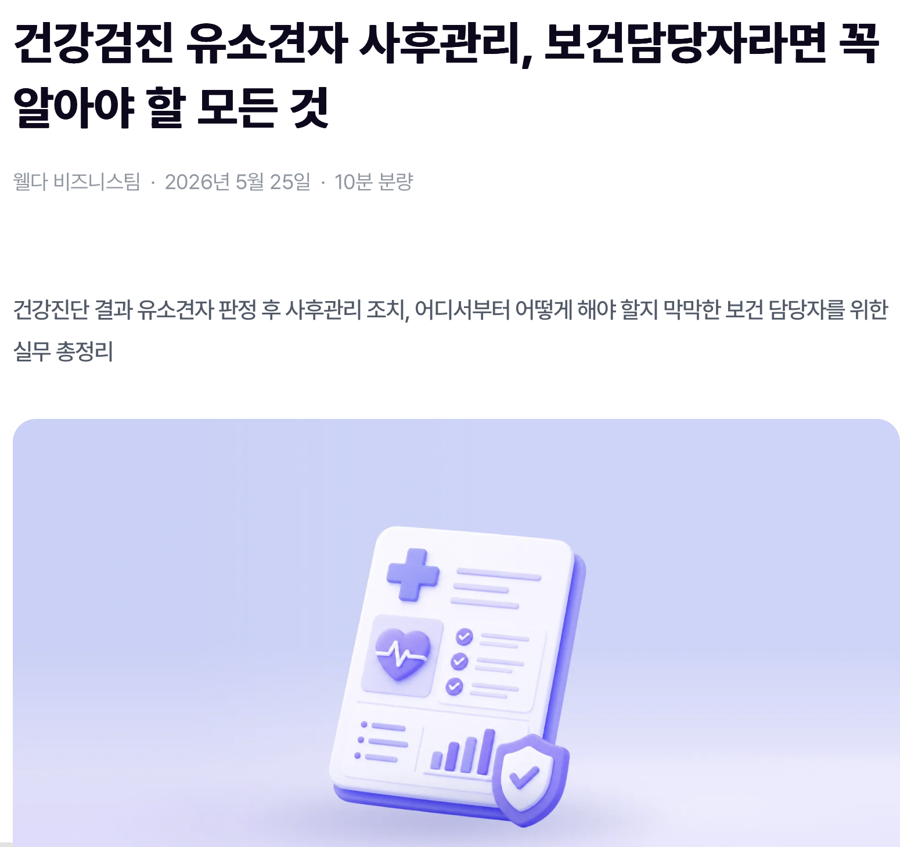
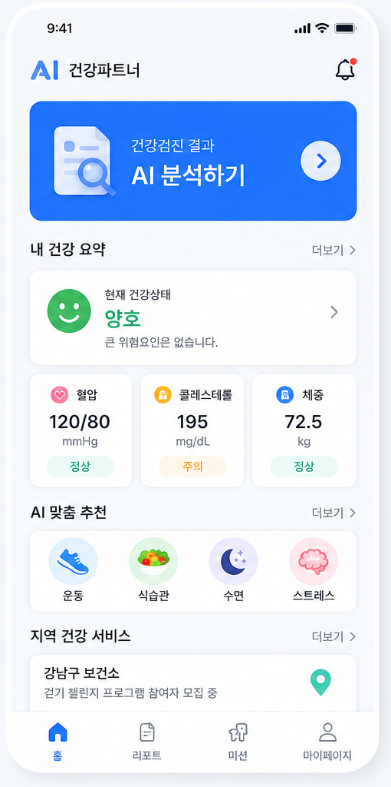
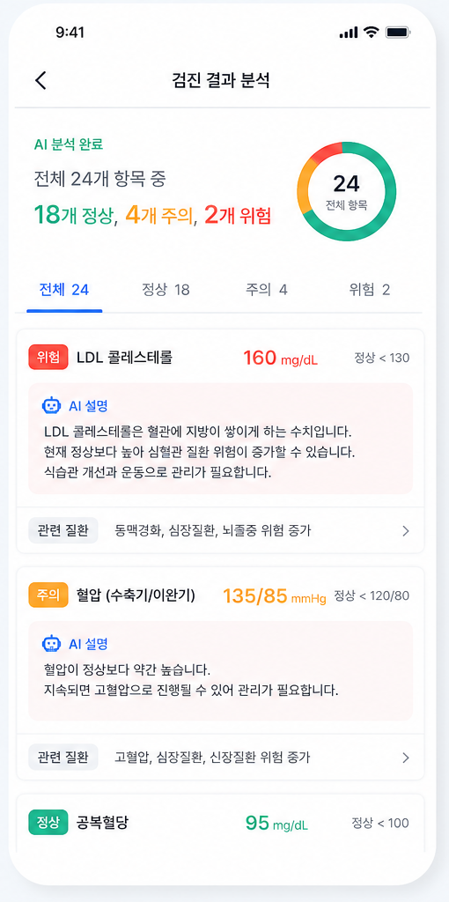
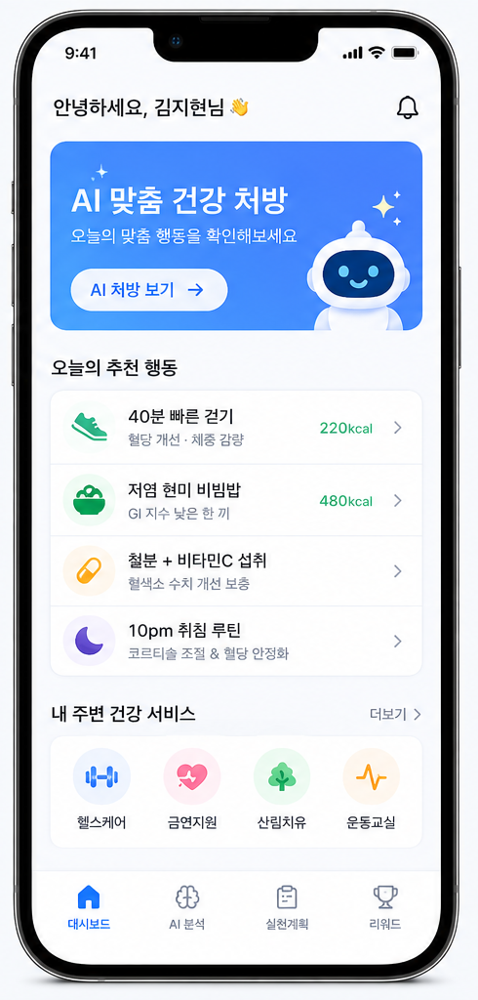
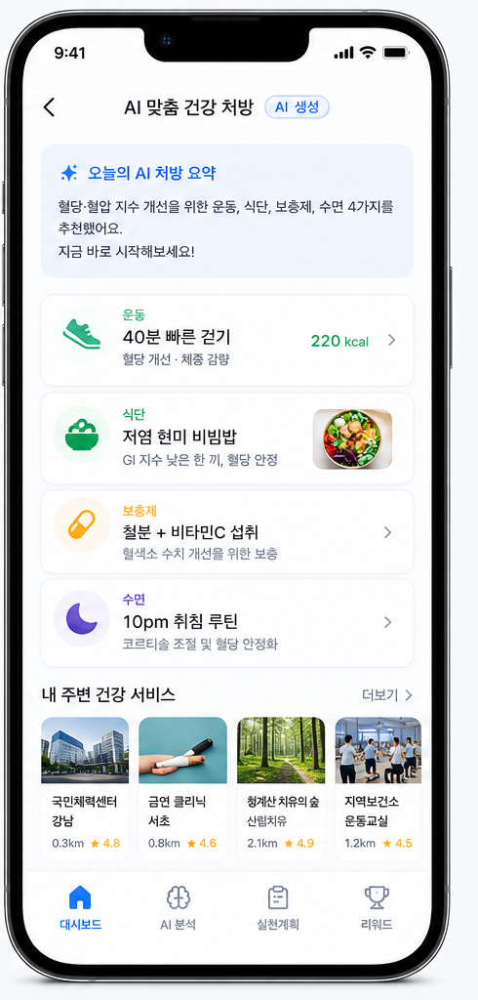

안녕하십니까. 직장인과 개인을 위한 건강검진 기반 맞춤형 건강 루틴 플랫폼, 키위 스캔입니다. 건강검진 결과는 단순히 확인하고 끝내는 서류가 아닙니다. 우리는 어려운 검진 수치와 의학 용어를 쉬운 일상어로 해석하고, 이를 바탕으로 나와 내 가족이 실천할 수 있는 1:1 맞춤형 건강 루틴을 만들어 드립니다.
키
키위 스캔
건강검진 결과 해석 & 일상 루틴 형성 플랫폼
건강검진 결과는 끝이 아니라, 건강한 루틴의 시작입니다.
어려운 검진 결과를 쉬운 일상어로 풀고, 나만의 맞춤형 건강 루틴을 만듭니다.
검진 결과 일상어 해석맞춤 건강 루틴 연계복약 및 재검사 리마인더
매년 의무적으로 건강검진을 받지만, 결과를 제대로 활용하는 사람은 드뭅니다. 전문 용어와 수치로 가득한 결과지 앞에서 내 건강 상태를 정확히 이해하기 어렵고, 앞으로 어떤 운동이나 식단을 해야 하는지 구체적인 가이드가 부족합니다. 또한, 처방받은 약의 부작용이나 정확한 복용법을 숙지하지 못해 막연한 불안감을 안고 살아갑니다. 결국 검진 결과는 방치되고, 건강 관리는 일상의 루틴으로 이어지지 않습니다.
01 · 문제인식
매년 받는 건강검진, 결과지 앞에서의 막막함
검진 결과의 의미를 제대로 알지 못해, 건강 관리와 올바른 복약이 일상 루틴으로 이어지지 않습니다.
이해하기 어려운 검진 수치
건강검진을 받아도 숫자가 의미하는 바를 모르고, 각 항목이 왜 중요한지 현재 내 상태가 어떠한지 정확히 파악하기 어렵습니다.

실천으로 이어지지 않는 가이드
결과지가 있어도 언제 다시 검사를 받아야 할지, 당장 내일부터 운동과 식단을 어떻게 시작해야 할지 구체적인 실행 계획이 막막합니다.

정확한 복약과 부작용의 불안감
내가 먹는 약이 어떤 효과가 있는지, 올바른 복용법과 주의할 점은 무엇인지 명확하게 숙지하지 못해 복약 중 불안감을 느낍니다.
경쟁 서비스는 각자 강점이 있지만 대부분 검진 결과 분석이나 질병 예측 한 영역에 집중되어 있습니다. 키위 스캔은 건강검진 결과를 쉽게 설명하고, 개인 맞춤 건강 처방으로 바꾸며, 지역 건강·복지 서비스 추천과 건강 미션까지 연결합니다. 즉, 결과를 보여주는 서비스가 아니라 실제 행동 변화를 만드는 서비스라는 점이 차별점입니다.
02 · 경쟁사 비교
경쟁사 비교 및 차별점
대부분의 서비스는 검진 결과 분석과 예측에 머무르지만, 우리는 실제 건강 행동과 지역 연계까지 제공합니다.
평가 항목
우리 서비스
THALOS
7POINT1
Bionutrion
우리 서비스 차별점
▥질병 예측 중심
✓
✓
×
×
질병 예측 중심
◌특정 질환 특화
✓
×
✓
×
특정 질환 특화
◎사용자 행동 변화 유도
✓
×
×
✓
사용자 행동 변화 유도
⌖지역 프로그램 연계
✓
×
×
×
지역 프로그램 연계
♧전반적인 생활습관 관리
✓
×
×
✓
전반적인 생활습관 관리
▿예방 중심 사후관리
✓
×
×
×
예방 중심 사후관리
우리 서비스 핵심 차별점
▤건강검진
AIAI 쉬운 설명
☑개인 맞춤 건강 처방
⌖지역 건강·복지 서비스 추천 산림치유, 보건소, 체육시설 등
▥건강 미션 및 지속적인 행동 관리
시장 진입 전략은 확실합니다. 산업안전보건법에 따라 정기적으로 의무 건강검진을 받아야 하는 직장인을 1차 타깃으로 삼습니다. 대한민국 인구 약 5,160만 명 중 60%에 달하는 약 3,100만 명이 잠재적인 건강검진 대상자입니다. 우리는 검진을 받은 직장인들이 첫 번째 고객이 되어 자신의 결과를 쉽게 이해하고 루틴을 형성하게 한 뒤, 점진적으로 전체 국민의 일상적인 건강 관리 시장으로 영역을 넓혀갈 것입니다.
03 · 시장기회
직장인 건강검진 의무화, 확실한 초기 타깃 시장
매년 실시되는 기업 의무 건강검진을 시작으로 전 국민 건강 관리 시장으로 확장합니다.
TAM
SAM
SOM
TAM
대한민국 총 인구
약 5,160만 명 (2026년 기준 전체 국민 건강 관리 대상)
SAM
건강검진 대상 인구
약 3,100만 명 (전체 인구의 약 60%)
SOM
의무 수검 대상 직장인
산업안전보건법에 따라 정기 검진을 받는 사무직 및 비사무직 노동자
시장 규모 산정 기준 및 진입 근거
초기 타깃 확보 근거: 산업안전보건법 제197조 (일반건강진단: 사무직 2년에 1회, 비사무직 매년 1회 의무)
통계 출처: 통계청(KOSIS) 2026년 장래인구추계 및 국민건강보험공단 2024년 일반건강검진 수검률 데이터
키위 스캔의 메인 화면입니다. 여기서 사용자는 건강검진표 분석 결과와 건강상태 요약을 한눈에 확인하고, 나에게 필요한 운동 가이드부터 주변 운동 시설까지 통합적으로 확인할 수 있습니다.
04 · 핵심솔루션 1/4
건강 상태를 한눈에, 직관적인 앱 메인 화면
건강검진표 분석, 건강상태 요약 및 운동 가이드, 주변 운동 시설을 한 화면에서 확인합니다.

건강검진표 분석 및 건강상태 요약
어플 메인 화면에서 나의 건강검진표를 바탕으로 분석된 핵심 건강상태 요약을 즉시 파악할 수 있습니다.
운동 가이드 및 일상 루틴 연결
현재 상태에 맞는 최적의 운동 가이드를 확인하고, 내일부터 당장 실천할 수 있는 건강 루틴을 제시받습니다.
주변 운동 시설 확인
내 주변의 운동 시설 위치와 정보를 한눈에 제공하여 건강 목표 달성을 위한 접근성을 극대화합니다.
다음은 개인 맞춤형 가이드입니다. 건강검진 결과지를 바탕으로 각 수치가 의미하는 바를 일상어로 쉽게 설명해 줍니다. 또한 개인의 상태에 맞춘 추가 검진을 제안하고, 현재 먹고 있는 약이 무엇인지, 약을 어떻게 먹어야 하는지, 그리고 주의해야 할 복용 정보는 무엇인지 명확하게 안내합니다.
04 · 핵심솔루션 2/4
쉬운 결과 해석과 맞춤형 검진·복약 가이드
검진 수치의 의미를 쉽게 이해하고, 나에게 꼭 필요한 검진과 복약 정보를 얻습니다.
건강검진 수치 설명 및 해석
어려운 의학 용어 대신 각 숫자가 의미하는 바와 왜 중요한지, 현재 건강 상태가 어느 수준인지 명확한 일상어로 해설합니다.
맞춤형 추가 검진 제안
사용자의 연령, 성별, 과거 결과 및 위험 요소를 종합적으로 분석하여 앞으로 받아야 할 적절한 건강검진 항목을 제안합니다.
먹고 있는 약 및 복용 정보 확인
내가 먹고 있는 약이 무엇인지, 어떻게 먹어야 하는지 알려주며, 주의해야 할 복용 정보까지 꼼꼼히 안내합니다.

세 번째 솔루션은 매일의 실천과 알림입니다. 검진 결과를 바탕으로 나와 내 가족이 함께 할 수 있는 일상적인 건강 루틴 연계를 돕습니다. 또한 혼자서는 챙기기 힘든 재검사 및 병원 방문 일정과 안전한 복약 관리 리마인더를 제공하여 예방의 시기를 놓치지 않게 합니다.
04 · 핵심솔루션 3/4
매일의 실천을 돕는 루틴 연계 및 리마인더
검진 결과를 실천 가능한 루틴으로 연결하고, 놓치기 쉬운 일정과 약 복용을 앱이 챙겨줍니다.

1:1 맞춤형 건강 루틴 연계
검진 데이터를 기반으로 내 상태에 딱 맞는 운동 종류와 강도, 식단 관리법 등을 추천하여 자연스러운 루틴 형성을 돕습니다.
적기 재검사 및 병원 방문 알림
바쁜 직장 생활 속에서 놓치기 쉬운 추적 관찰 시기와 다음 검진 일정을 리마인더로 챙겨주어 질환 예방의 시기를 놓치지 않게 합니다.
안전한 복약 관리 리마인더
규칙적인 복약 시간을 꼼꼼히 알려주고, 약물 복용 시 주의해야 할 사항이나 중복 복용 위험을 사전에 인지하여 안전을 지켜줍니다.
더 나아가 앱 내에서 형성된 건강 루틴을 오프라인으로 이어줍니다. 사용자의 건강 상태와 필요에 맞춘 지역 제휴 서비스를 통해 거주지나 직장 주변의 지역 건강 시설, 헬스장, 필라테스 등을 추천하여 즉각적인 건강 관리가 가능하도록 지원합니다. B2C 중심의 가치에서 출발해 B2B 파트너십을 다지는 중요한 고리입니다.
04 · 핵심솔루션 4/4
오프라인으로 이어지는 지역 제휴 서비스
지역 제휴 서비스 - 지역 건강 시설, 헬스장, 필라테스 등 추천을 통해 오프라인 실천을 돕습니다.
지역 건강 시설 및 헬스장 추천
사용자의 루틴과 위치를 기반으로 거주지 및 직장 주변의 검증된 지역 건강 시설과 헬스장을 추천하여 운동의 접근성을 높입니다.
맞춤형 필라테스 및 특화 운동 연계
체형 교정이나 전문적인 재활 훈련이 필요한 사용자를 위해, 검증된 지역 제휴 서비스(필라테스, 요가 등)를 매칭해 줍니다.
온·오프라인 통합 건강 관리 경험
개인의 건강검진 데이터에서 시작된 루틴 제안이 지역 파트너십을 통해 실제 방문과 지속적인 운동 실천으로 이어집니다.

수익 모델은 철저하게 B2C 기반에서 출발해 점진적으로 확장하는 구조입니다. 초기에는 개인 사용자에 집중하여 건별 검진 결과 분석, 루틴 연계, 프리미엄 구독으로 안정적인 매출을 확보합니다. 이후 사용자의 데이터를 기반으로 지역 헬스장, 검진센터, 기업 복지 프로그램과 연계하는 B2B 모델로 수익을 다각화하며, 궁극적으로는 보건소 및 노인 건강관리 사업 등 공공 B2G 생태계로 확장할 계획입니다.
04 · 수익구조
확실한 B2C 기반에서 B2B, B2G로의 유연한 확장
개인 유저 중심의 단단한 과금 체계를 바탕으로 기업과 공공 부문 생태계로 비즈니스를 확장합니다.
B2C (개인 사용자)
건별 AI 건강검진 결과 분석건강 관리 / 운동 루틴 연계프리미엄 구독의료진 검수 서비스
↓
B2B (기업 및 제휴)
지역 제휴 서비스 (지역 건강 시설, 헬스장, 필라테스 등)병원·검진센터 SaaS보험사 및 기업 복지 프로그램
↓
B2G (공공 부문)
보험사 / 기업 복지 패키지 참여공공 디지털 헬스케어 사업 (보건소, 복지관 등)노인 건강관리 프로그램 연계
시장 진입 전략은 의무 수검 직장인을 첫 번째 타깃으로 삼습니다. 검진 직후 사용자가 자신의 결과를 이해하고 싶은 순간을 잡아 초기 유입을 만들고, 기업 HR 및 웰니스 채널로 확장합니다. 이후 건강, 헬스, 유튜버 협업으로 신뢰도 높은 콘텐츠 유입을 만들고, 자체 인스타그램 1만 페이지를 활용해 후기와 루틴 챌린지를 빠르게 확산하겠습니다.
06 · 시장진입전략
의무 수검 직장인에서 콘텐츠 기반 확산 채널로
직장인 건강검진 의무 수요를 바탕으로 초기 진입하고, 기업 채널과 콘텐츠 채널을 차례로 넓혀갑니다.
1. 의무 수검 직장인 유입 확보
법정 의무 건강검진 대상자인 기업 근로자를 최우선 타깃으로 하여 검진 직후 자연스러운 유입을 창출합니다.
2. 기업 HR 및 웰니스 채널 연계
개인 단위의 활성화 지표를 기반으로 기업의 사내 복지 채널 및 웰니스 프로그램(B2B)과 연동합니다.
3. 건강·헬스·유튜버 협업
건강관리, 헬스, 운동 분야 유튜버와 협업해 검진 결과 해석과 루틴 형성 사용 사례를 콘텐츠로 확산합니다.
4. 자체 인스타그램 1만 페이지 활용
이미 확보한 1만 규모 인스타그램 페이지를 활용해 초기 사용자 유입, 후기 콘텐츠, 루틴 챌린지를 빠르게 검증합니다.
Clear First User Value
직장인 개인이 스스로 자신의 검진 결과를 파악하고 싶어 하는 핵심 니즈를 먼저 해결합니다.
Creator & Owned Channel
건강·헬스 크리에이터 협업과 자체 인스타그램 채널을 결합해 빠른 유입과 신뢰를 동시에 만듭니다.
마지막으로 키위 스캔을 만들어가는 팀을 소개합니다. 연세대학교 미래캠퍼스 학생들로 구성된 저희는 비즈니스, 의공학, 디지털 헬스케어를 전공한 융합 인재들입니다. 환자와 사용자의 관점에서 비즈니스를 기획하고, 의료 지식과 제품 역량을 결합하여 건강검진 결과를 건강한 일상 루틴으로 바꾸는 혁신을 만들어내겠습니다. 감사합니다.
07 · 팀소개
B2C 헬스케어 혁신을 이끌 융합형 팀 역량
비즈니스 기획부터 바이오메디컬 도메인 이해, 개인화 프로덕트 설계까지 갖춘 최적의 실행 팀입니다.